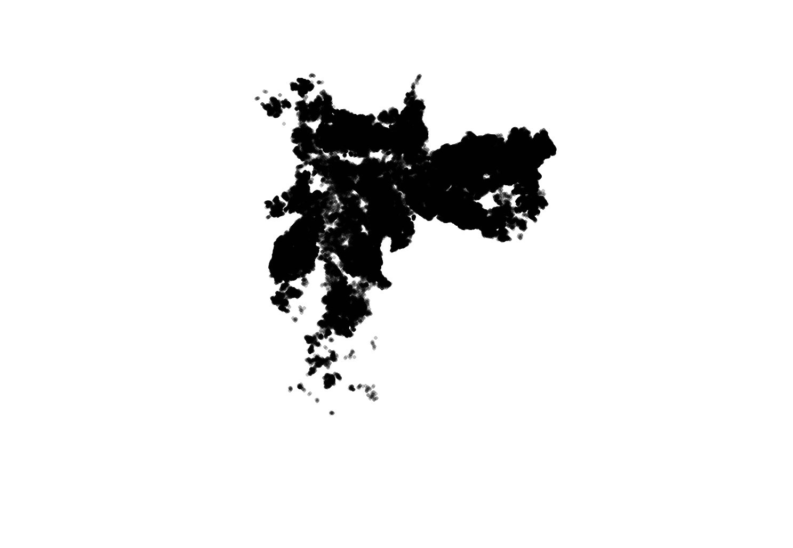

Imagem da publicação Banksy, São Paulo e a Bela Vista (2014).
2010–2022 · 50 distritos cresceram e 46 perderam moradores.
−9.436 moradores
69.460 em 2010 · 60.024 em 2022.
| Distrito | 2010 | 2022 | Variação |
|---|
De 2010 a 2022, Vila Andrade passou de 127.015 para 168.669 moradores. O ganho de 41.654 pessoas foi o maior da cidade. Em termos proporcionais, a Barra Funda liderou. Com uma população inicial de 14.383, o distrito cresceu 132,5% e chegou a 33.436 moradores.
Na Bela Vista, que inspirou o mapa de densidade de 2014, a população caiu 13,6%. A contagem mostra quantas pessoas residiam no distrito em cada censo. Explicar a queda exige dados sobre nascimentos, mortes, migração e mudanças de moradia.
O gráfico usa a série da Prefeitura de São Paulo para os 96 distritos. A variação percentual divide a diferença entre as duas contagens pela população do primeiro ano. Os intervalos entre censos têm durações diferentes e as taxas exibidas são acumuladas no período.
Para 1950–1980, a Prefeitura recompôs retrospectivamente os limites distritais. De 1991 a 2010, agregou os setores censitários. Os valores de 2022 usam os agregados preliminares da versão publicada pela Prefeitura. As somas dos distritos reproduzem os totais municipais publicados para 2010 e 2022.